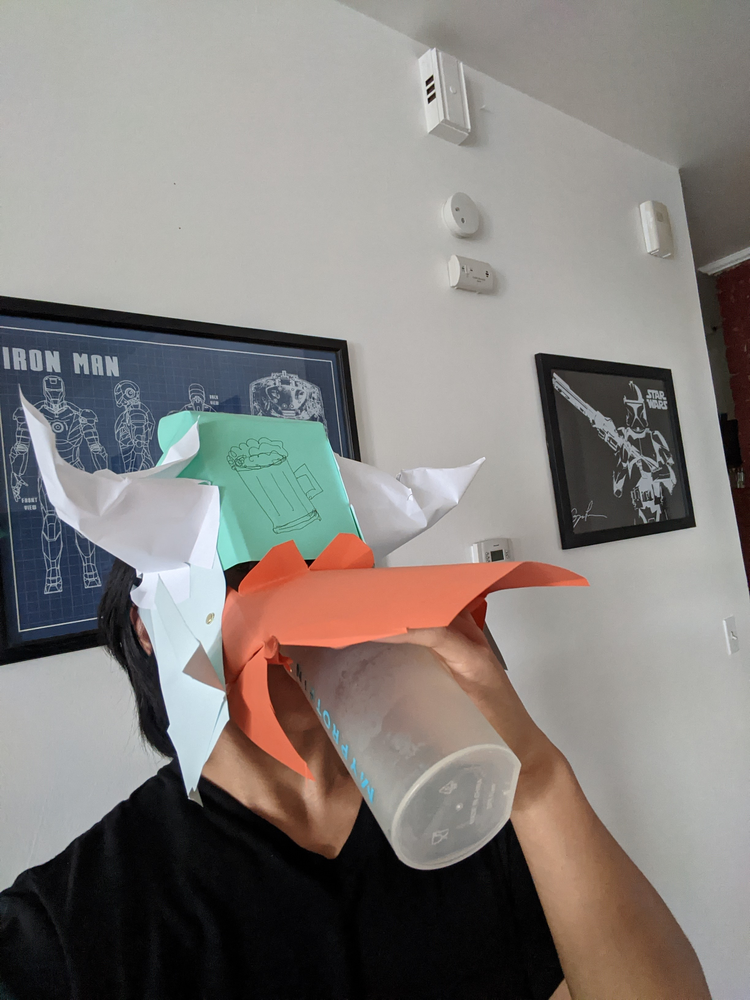
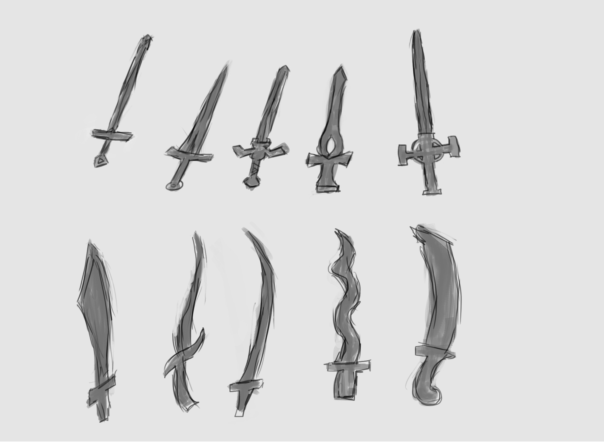
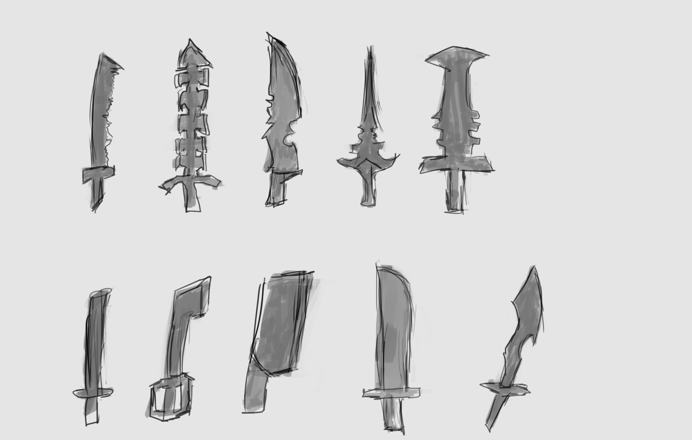
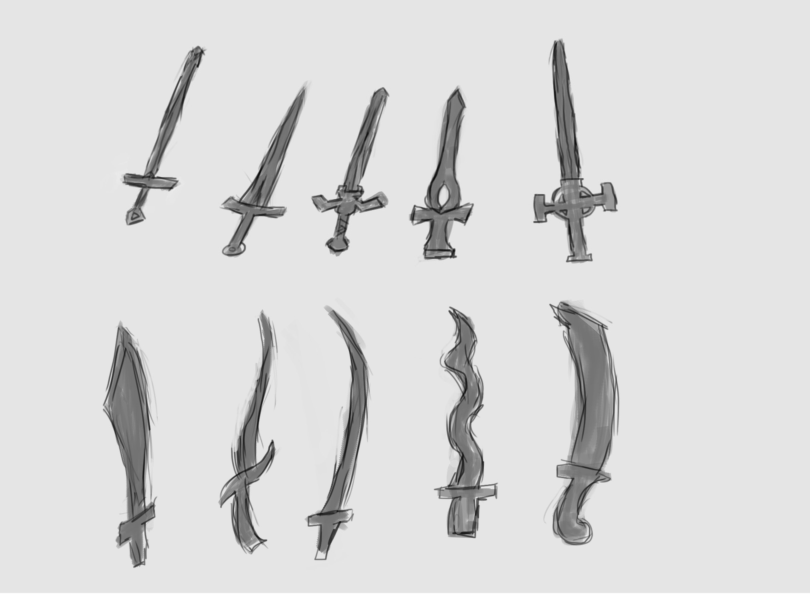
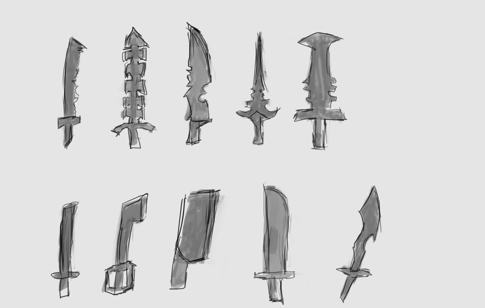

Ideation & Prototyping Week 3
Social Distancing Pub Helm
For my in class face mask idea, I started writing down ideas and notes for a cool polgonal mask. I kept it pretty loose, no hard set direction or anything. After some fiddling around when drawing, I decided to just go at it and see where I ended up. I think I'm better at conceptualizing when I work with my hands and physical materials. Since I keep my sketches so loose, my final product can evolve unpredictably. In this case, I ended up with a Viking looking helm used for drinking while keeping your face covered. I started with a basic shape for a mask to cover the forehead and mouthguard and connected them. I cut the mouth part to extend it lower and I realized that the orange paper I chose looked kinda like a beard. That's when inspiration sparked and I came up with the idea to make a Viking looking helmet. The beard looking face shield is placed on using a hinge so it can move up and down as the user would pick up a drink. I trimmed and folded a mustache and added some horns and the helm was ready to start social distancing! I think the horns would help people keep stay a distance as well, even if it isn't historically accurate.  A bonus besides dressing up as a crew of vikings with your friends, no one would recognize you if you made a fool of yourself!50 Sword Skectches
For my 50 renderings, I decided to draw and design some swords. There's so many different cultures out there and so many different stradegies that each one has taken over history to design this sharp piece of metal. The first steps I took were to jot down some ideas and styles and a few sketches of each kind.
The second step I took was to start sketching out some silhouettes and tried to get some interesting shapes for my categories. After That
I sketched out some outlines to detail each one further. I realized that it had been a long time since I had a chance to do any sketching with my Wacom tablet in Photoshop, so I was super rusty but it was nice to get back into it a little.

The first set I went with was a basic single-handed straight sword which is good to use with something in the user's other hand.
The straight blade lets them perform a stabbing motion as well as gives it a nice length for its weight. In contrast to that, I drew some curved blades which aren't as good at the lunging motion but excel in slicing. This lends them well to specific styles of combat.
I believe the straight style was more common in Western European history with curved scimitars in Middle Eastern and some Asian countries.
I then tried making larger shapes that would be used more with two hands. These larger swords would be heavier but would be tough to block.
I believe they would also do well in brute force impacts against armor and shields. I tried out some interesting shapes like one-sided blades,
swords that look like giant knives, and more. The extra-large weapons are more fantasy styled where they would be more art pieces or just fun to imagine. Swords this big would be great for blocking projectiles and completely demolish someone trying to block but would be the way to slow to be used for real combat or even a regular-sized person to wield.

The next grouping I went with were serrated knives. I thought of this category when I was looking at my bread knife the other day. I think for these blades, besides used to saw down trees, they are used for causing injuries that are much harder for the victim to recover from. With straight cuts, I
believe that they would have the chance to get stitched up but with such an unclean cut, maybe not so much. Other than that I think they would cause some intimidation in their opponents. After that, I thought a blunt type sword would be interesting. I'm not completely sure if these would be considered swords but I think a blunt type blade would be similar to the heavier swords where they would excel at brute force bashing against armor and shields. I think another interesting scenario could be that they might break other swords that they come in contact with.
For this group, I was thinking of lightweight swords like rapiers and katanas. These came out more towards the latter part of sword engineering with new technology to make steel lighter and sharper. I think that as combat became more about mobility and less about wearing heavy armor, these lightweight longer blades took the advantage.
With such a change in material, the combat styles like fencing or kendo arose. Combat became lightning-fast and the focus was all speed. Besides being worse against armor,
they were longer swords and probably worse if an opponent got up close. For that, there were extra short swords or daggers too. Great as a secondary weapon for deflecting blows,
great up close, and super light and small for concealing as a surprise attack. I think another possibility was to use them as thrown projectiles and maybe even for cooking too!
The last bundle I came up with was some strange ideas I came up with. Maybe a gun with a sword on it for close and far. How bout two swords connected at the hilt for some double-bladed action,
or maybe some smaller swords on a hilt for triple the fun! Tried out some themes like a moon or star that gave me some interesting shapes. The hook blades probably aren't too effective but they do look pretty intimidating don't wanna be near one of those when they get pulled back towards its owner. I also played around with some blades splitting off the hilt in different ways as well as how the hilt could be shaped too.
Overall, I had some fun experimenting with the shapes and styles and thinking about swords through the ages. It was great to get back into sketching again after so long too. I think I might have interpreted
this assignment a little differently from my classmates... instead of sketching an object with 50 different mediums or different ways, I designed 50 different swords, heh.
The first steps I took were to jot down some ideas and styles and a few sketches of each kind.
The second step I took was to start sketching out some silhouettes and tried to get some interesting shapes for my categories. After That
I sketched out some outlines to detail each one further. I realized that it had been a long time since I had a chance to do any sketching with my Wacom tablet in Photoshop, so I was super rusty but it was nice to get back into it a little.

The first set I went with was a basic single-handed straight sword which is good to use with something in the user's other hand.
The straight blade lets them perform a stabbing motion as well as gives it a nice length for its weight. In contrast to that, I drew some curved blades which aren't as good at the lunging motion but excel in slicing. This lends them well to specific styles of combat.
I believe the straight style was more common in Western European history with curved scimitars in Middle Eastern and some Asian countries.
I then tried making larger shapes that would be used more with two hands. These larger swords would be heavier but would be tough to block.
I believe they would also do well in brute force impacts against armor and shields. I tried out some interesting shapes like one-sided blades,
swords that look like giant knives, and more. The extra-large weapons are more fantasy styled where they would be more art pieces or just fun to imagine. Swords this big would be great for blocking projectiles and completely demolish someone trying to block but would be the way to slow to be used for real combat or even a regular-sized person to wield.

The next grouping I went with were serrated knives. I thought of this category when I was looking at my bread knife the other day. I think for these blades, besides used to saw down trees, they are used for causing injuries that are much harder for the victim to recover from. With straight cuts, I
believe that they would have the chance to get stitched up but with such an unclean cut, maybe not so much. Other than that I think they would cause some intimidation in their opponents. After that, I thought a blunt type sword would be interesting. I'm not completely sure if these would be considered swords but I think a blunt type blade would be similar to the heavier swords where they would excel at brute force bashing against armor and shields. I think another interesting scenario could be that they might break other swords that they come in contact with.
For this group, I was thinking of lightweight swords like rapiers and katanas. These came out more towards the latter part of sword engineering with new technology to make steel lighter and sharper. I think that as combat became more about mobility and less about wearing heavy armor, these lightweight longer blades took the advantage.
With such a change in material, the combat styles like fencing or kendo arose. Combat became lightning-fast and the focus was all speed. Besides being worse against armor,
they were longer swords and probably worse if an opponent got up close. For that, there were extra short swords or daggers too. Great as a secondary weapon for deflecting blows,
great up close, and super light and small for concealing as a surprise attack. I think another possibility was to use them as thrown projectiles and maybe even for cooking too!
The last bundle I came up with was some strange ideas I came up with. Maybe a gun with a sword on it for close and far. How bout two swords connected at the hilt for some double-bladed action,
or maybe some smaller swords on a hilt for triple the fun! Tried out some themes like a moon or star that gave me some interesting shapes. The hook blades probably aren't too effective but they do look pretty intimidating don't wanna be near one of those when they get pulled back towards its owner. I also played around with some blades splitting off the hilt in different ways as well as how the hilt could be shaped too.
Overall, I had some fun experimenting with the shapes and styles and thinking about swords through the ages. It was great to get back into sketching again after so long too. I think I might have interpreted
this assignment a little differently from my classmates... instead of sketching an object with 50 different mediums or different ways, I designed 50 different swords, heh.
home
while (!deck.isInOrder()) {
print 'Iteration ' + i;
deck.shuffle();
i++;
}
print 'It took ' + i + ' iterations to sort the deck.';